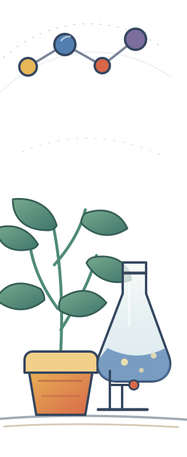
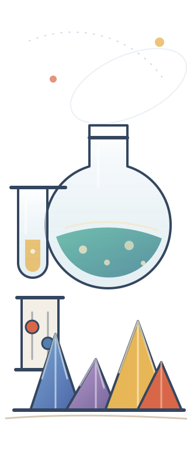

Element 8 · nonmetal
Oxygen O–16
Neutral Oxygen-16 · 2 occupied shells · exact composition shown below.
Exact particle countsschematic spatial model
O
Interactive 3D is unavailable, but all element data remains accessible.
01
Puckered geometry
Alternating height keeps the ring from lying flat.
Models for this element
Molecules & concept views
4 idealized teaching models